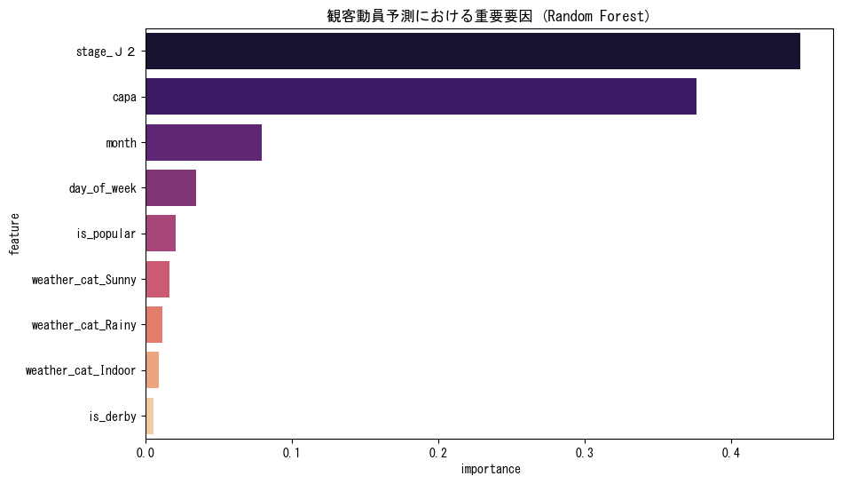
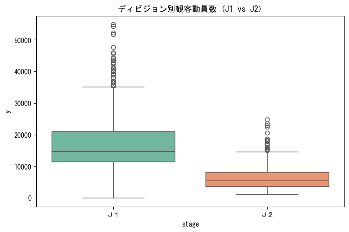
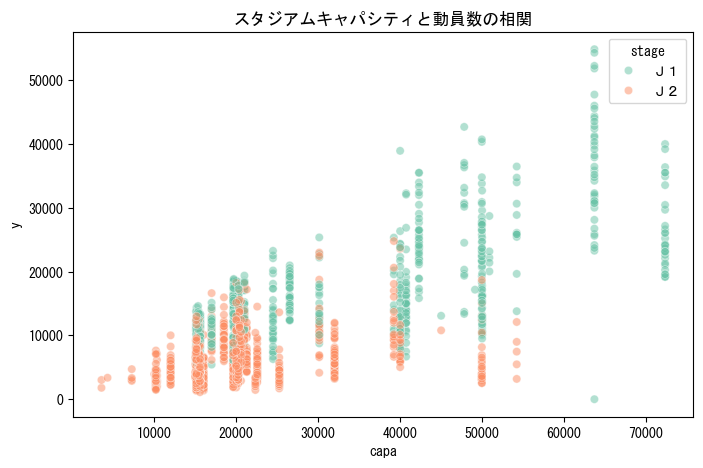
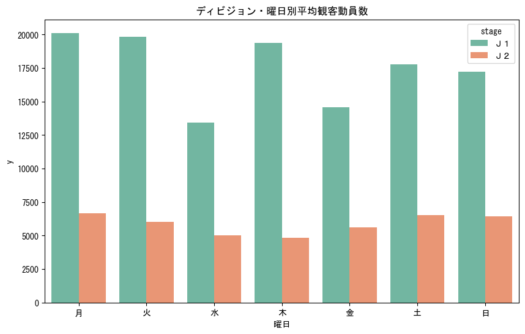

Jリーグ観客動員数予測分析 最終報告書
1-1. エグゼクティブサマリー (Summary)
- 背景: リーグ全体の集客戦略を最適化するため、長年「経験と勘」に頼っていた観客動員の決定要因を、客観的なデータによって定量化する必要があった。
- 目的: 2012-2014年の全試合データから動員予測モデルを構築し、経営資源を集中投下すべき「重要要因」と、現場で実行可能な「改善アクション」を特定する。
- 結果: 動員数は「ディビジョン」と「キャパ」という構造的要因で約8割が決まる。また、J1では祝日連動の変則平日（月・火）開催が、土日を凌ぐ最大集客を記録する特異点であることを解明した。
- アクション: J1昇格時の運営規模を前年比2.7倍で再設計せよ。また、変則開催日（月・火）を「最大需要日」として個別警戒し、スタッフ・物販等のリソースを最優先で集中投下せよ。
1-2. 分析の結果と考察 (Analysis & Findings)
1-2-1. 動員を決定する構造的要因（要因重要度）
【算出プロセスの概要】
本分析では、数千回の予測シミュレーションを通じて「各変数が予測精度にどれだけ寄与したか」を累積するアルゴリズムを用いています。提示する重要度は、その変数が失われた際の予測誤差の拡大度合いを物理的に示したものです。

So What?: 「どのカテゴリで、どの規模の会場でやるか」という初期設計が、現場の集客努力を上回る決定力（影響度8割）を持つ。
1-2-2. ディビジョン(stage)別の圧倒的な差

※ 箱ひげ図の見方: 中央の太線が中央値、箱の上下がデータの中心50%（第1・第3四分位点）、上下に伸びる線（ひげ）の端が外れ値を除く上下限を示します。
So What?: J1昇格は単独で平均1.1万人（2.7倍）の動員増を物理的に生み出す。運営フェーズの抜本的切り替えが必須。
1-2-3. スタジアムキャパシティとの相関

So What?: 物理的な天井（キャパ）により集客が阻害されている「機会損失」を可視化。人気カードの大型会場振替が最大の集客施策となる。
1-2-4. 曜日別の集客パターン（ディビジョン別）

So What?: J1では祝日等の変則開催（月・火）が土日を凌ぐピークとなる。J2では各曜日に集客が分散しており、カテゴリによって「警戒すべき曜日」が異なる。
1-3. 結論と今後のアクション (Conclusion & Recommendations)
短期アクション（運営最適化）
- 変則開催への対応: J1 host: J1の月・火開催は祝日・連休要因によるスパイクが発生しやすい。通常の平日ルーチンではなく「最大規模」の警備・運営布陣を敷くこと。
- 雨天時対応: 天候による動員減は僅か(1-2%)。コア層は天候に関わらず来場するため、雨天を理由とした安易なスタッフ削減はサービス低下を招く。
中長期アクション（戦略的集客）
- 機会損失の解消: キャパ充足率が高いカード（特にJ1の月・火・土）を大型会場へ振り替えることで、物理的な上限を突破した集客を狙う。
- 特徴量の精緻化: 予測精度向上のため、「祝日・連休中フラグ」の追加を強く推奨する。
© 2026 NAMINORI Data Science Team.